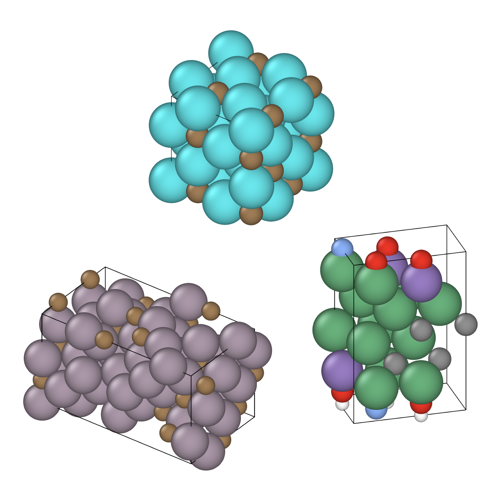

Research Interests
My research revolves around Graph Neural Networks (GNNs) and their use for various cutting-edge applications in Chemical and Materials Sciences. I am driven by the challenge of representing molecules and materials accurately in computational systems. This interest sparked my curiosity in applying cheminformatics to study inorganic compounds, where traditional representations of molecules (e.g. SMILES) are not compatible. I aim to answer key research questions such as: How can we represent molecules and materials more accurately to enable machine learning models with higher predictive power and interpretability?
Research Topics

Data Driven Ligand Optimization

Explainable Deep Learning Models for Interstitial-Alloy